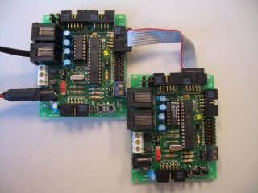
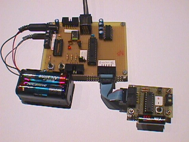
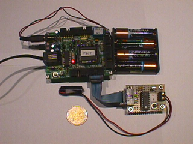

|
PROYECTO STARGATE: SERVIDOR PICP
|
|

|
Descripción:
Además de los servicios
básicos,
se implementa un servicio de reset del PIC (para entrar en modo
monitor e inicializar el PC) así como parte de los
servicios del protocolo
ICSP
de Microchip, para la programación/verificación de
PICs.
|
Introducción
Servidor de
programación/verificación de microcontroladores PIC.
Implementa parte de los servicios del protocolo
ICSP,
de Microchip, además de los servicios
básicos.
Todos los servicios
específicos, salvo el de reset, son los mismos que los del
protocolo
ICSP.
El servidor PICP ofrece una interfaz serie para la mayoría de
los servicios ofrecidos por este protocolo.
Características
El funcionamiento del
servidor es el siguiente:
Implementación
de los servicios
básicos
Implementación
de 6 servicios específicos
Si
recibe un byte que no reconoce, lo ignora
Inicialmente NO
se hace reset del PIC
Servicios específicos
Los servicios
específicos son:
Aquí
puedes encontrar más información sobre las tramas.
Ejemplos
Para poder hacer un
cliente que grabe PICs no sólo es necesario conocer los
servicios ofrecidos, sino en qué orden hay que invocarlos para
poder realizar la grabación/verificación. Lo mejor es
ver algunos ejemplos. La grabación depende del PIC
empleado, aunque los servicios son los mismos.
Cosas a tener en
cuenta:
Entrada
en modo monitor. Para que los servicios funcionen correctamente,
es necesario previamente que el pic entre en modo monitor. Esto se
consigue invocando el servicio de RESET.
Si el PIC no está conectado, o no recibe correctamente los
12v, no entrará en este modo.
Grabación
en familias 16F8XA: Se graban byte a byte. Una vez que el
contador de programa contiene la dirección en la que queremos
grabar, se invoca el servicio load
data for program memory,
con el que se envía la palabra a grabar, y luego se invoca a
Begin
Erase/Programming Cycle.
La palabra quedará grabada. Para verificar que así ha
sido se puede usar Read
Data from Program Memory,
con lo que se lee lo que hay almacenado en esa posición. Para
grabar la siguiente posición de memoria invocamos al servicio
Increment
Address
(el contador de programa se incrementa) y repetimos el proceso.
Grabación
en familias 16F87XA: Se graban de 8 en 8 bytes. Primero situamos
el contador de programa en la dirección a partir de la cual
queremos grabar. Se envía la primera palabra con el servicio
load
data for program memory
y se incrementa el contador de programa (Increment
Address).
Ahora se hace lo mismo con la segunda palabra. Una vez que se ha
enviado la octava palabra, en vez de incrementar el contador de
programa se invoca el servicio de grabación (Begin
Erase/Programming Cycle),
con lo que las 8 palabras se grabarán.
Lista de cosas por hacer
La versión
actual del servidor PICP está en fase de pruebas. Todavía
no se han implementado todos los servicios del protocolo ICSP. Las
características futuras que se añadirán serán:
Load
Data for Data Memory: Enviar un dato para la memoria de datos
Read
Data for Data Memory: Leer un dato de la memoria de Datos
Bulk
Erase Program Memory: Borrado completo de la memoria de programa
Bulk
Erase Data Memory: Borrado completo de la memoria de datos
Soporte para
los pic de la familia 18
Implementaciones
|
sg-picp-pic16f876-skypic-0
|
-
Reset:
RB4
Datos:
RB7
Reloj:
RB3
Cuando se graba
una skypic desde otra skypic, la conexión es la siguiente.
Se conecta un cable de bus del puerto B de la grabadora (conector
CT2) al puerto de grabación de la que se quiere grabar
(CT4). Esta conexión se muestra en la foto. Fijarse en la
posición de los jumpers de programación. La skypic
que hace de grabadora es la de la izquierda, que es la que está
conectada a un PC
|

|
-
Reset:
RB5
Datos:
RB7
Reloj:
RB6
|

|
-
Reset:
PA4
Datos:
PA7
Reloj:
PA3
Inicialmente se
enciende el led de la tarjeta CT6811
|

|
Download
|
IMPLEMENTACIONES
DEL SERVIDOR PICP
|
Links
Noticias
9/Mar/2005
: Añadido
sg-picp-pic16f876-skypic-0. Preparado para funcionar con la tarjeta
Skypic
10/Mar/2004:
Modificado sg-picp-pic16f876-xx-0 para que funcione correctamente en
una tarjeta SKYPIC
29/Dic/2003:
Publicados servidores sg-picp-6811e2-ct-0 y
sg-picp-pic16f876-xx-0
[Proyecto
Stargate]
IEA
ROBOTICS
Juan
González